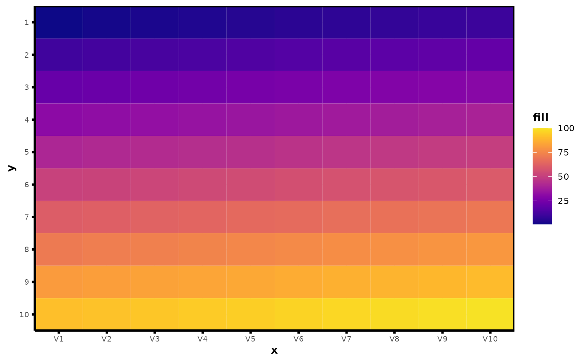
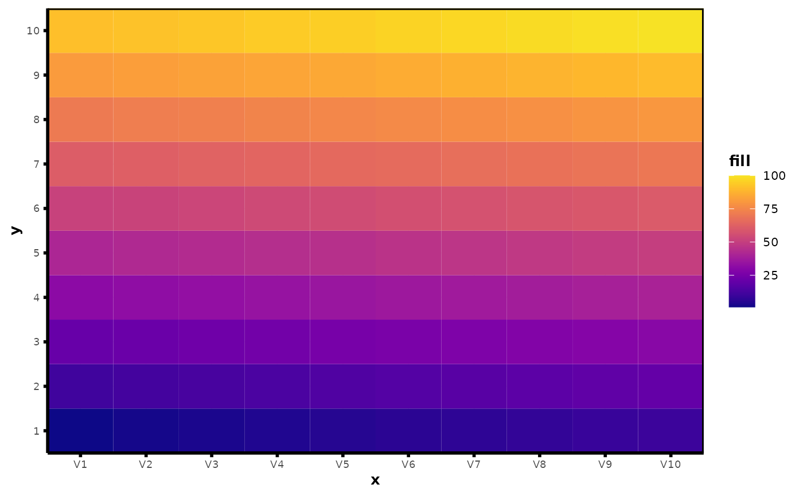
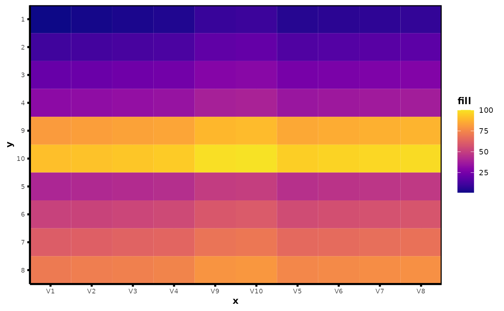
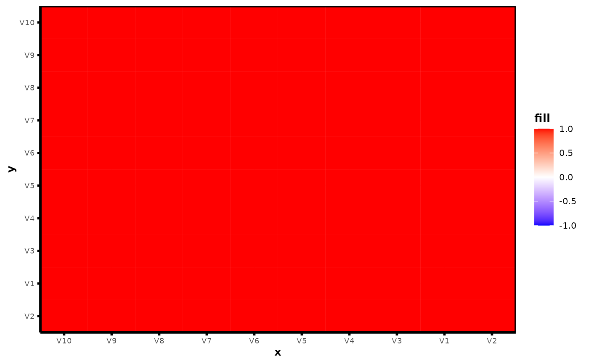

plot_heatmap.Rd`plot_heatmap` generates nice heatmaps of a data matrix (or frame) with ease. `plot_hclust_heatmap` provides additional functionality beyond `plot_heatmap` that allows for clustering the rows and columns of the heatmap via hierarchical clustering. `plot_cor_heatmap` generates nice (clustered) heatmaps for the feature correlation matrix of X. These heatmap functions also allow for row/column groups in the plotting display, colored axis text labels, and customization of the color/theme.
plot_heatmap(
X,
y_groups = NULL,
x_groups = NULL,
ytext_labels = rownames(X),
xtext_labels = colnames(X),
ytext_num = FALSE,
xtext_num = FALSE,
ytext_colors = NULL,
xtext_colors = NULL,
show_ytext = TRUE,
show_xtext = TRUE,
center = FALSE,
scale = FALSE,
z_range = NULL,
text_size = 0,
y_orient = "identity",
size = 0,
color_by_quantile = FALSE,
n_quantiles = 5,
color_scheme = "viridis",
viridis_option = "C",
theme_function = NULL,
show_plot = FALSE,
...
)
plot_hclust_heatmap(
X,
y_groups = NULL,
x_groups = NULL,
ytext_labels = rownames(X),
xtext_labels = colnames(X),
ytext_num = FALSE,
xtext_num = FALSE,
ytext_colors = NULL,
xtext_colors = NULL,
show_ytext = TRUE,
show_xtext = TRUE,
clust_x = TRUE,
clust_y = TRUE,
clust_x_wi_group = TRUE,
clust_y_wi_group = TRUE,
dist_metric_x = "euclidean",
dist_metric_y = "euclidean",
dist_matrix_x = NULL,
dist_matrix_y = NULL,
linkage_x = "ward.D",
linkage_y = "ward.D",
center = FALSE,
scale = FALSE,
z_range = NULL,
text_size = 0,
size = 0,
color_by_quantile = FALSE,
n_quantiles = 5,
color_scheme = "viridis",
viridis_option = "C",
theme_function = NULL,
show_plot = FALSE,
...
)
plot_cor_heatmap(
X,
cor_type = "pearson",
xytext_labels = colnames(X),
xytext_colors = NULL,
show_ytext = TRUE,
show_xtext = TRUE,
clust = TRUE,
linkage = "ward.D",
z_range = c(-1, 1),
text_size = 0,
color_by_quantile = FALSE,
n_quantiles = 5,
color_scheme = "cor_temperature",
viridis_option = "C",
theme_function = NULL,
show_plot = FALSE,
...
)Data matrix or data frame to use for heatmap.
Data vector of group ids to use for grouping rows in heatmap.
Data vector of group ids to use for grouping columns in heatmap.
y-axis labels in heatmap.
x-axis labels in heatmap.
Logical; whether or not y labels are numeric/continuous.
Logical; whether or not x labels are numeric/continuous.
(Optional) Data vector to use for coloring y-axis text.
(Optional) Data vector to use for coloring x-axis text.
Logical; whether or not to show y-axis text labels.
Logical; whether or not to show x-axis text labels.
Logical; whether or not to center columns of X.
Logical; whether or not to scale columns of X.
Vector of length 2 with the min and max of the fill color range for heatmap. Used to set bounds for fill legend.
Numeric; size of text on heatmap. If text_size = 0
(default), no text is shown.
One of "identity" or "ordered". If "identity", plots heatmap
of X as if it is an image. If "ordered", plots first row of X
at the bottom of the heatmap and the last row of X on top.
Size argument in [ggplot2::geom_tile()] to avoid white lines in continuous heatmap.
Logical; whether or not to use quantiles to
construct fill color scale. Default is FALSE.
Number of quantiles for color scheme. Used only if
color_by_quantile = TRUE.
One of "viridis", "temperature", "cor_temperature", or a data vector of colors to use for the fill color scale.
Argument indicating viridis palette name. Only used if `color_scheme = "viridis"`.
Function which adds theme() to ggplot object. If
NULL, adds vthemes::theme_vmodern() to ggplot.
Logical. Should this plot be printed? Default FALSE.
Other arguments to pass to vthemes::theme_vmodern()
or theme_function().
Logical; whether or not to cluster columns.
Logical; whether or not to cluster rows.
Logical; whether or not cluster within x_groups.
Logical; whether or not cluster within y_groups.
Distance metric for clustering columns (see [stats::dist()]).
Distance metric for clustering rows (see [stats::dist()]).
Distance matrix for clustering columns (optional). Must
provide either dist_metric or dist_mat if clust_x = T.
Distance matrix for clustering rows (optional). Must
provide either dist_metric or dist_mat if clust_y = T.
Type of linkage for clustering columns (see [stats::hclust()]).
Type of linkage for clustering rows (see [stats::hclust()]).
Type of correlation. Must be one of "pearson", "kendall", or "spearman"
x- and y-axis labels for correlation heatmap.
(Optional) Data vector to use for coloring x- and y-axis text labels in correlation heatmap.
Logical; whether or not to cluster columns and rows in correlation heatmap
Type of linkage for clustering rows and columns in correlation heatmap (see [stats::hclust()]).
A ggplot object.
df <- as.data.frame(matrix(1:100, nrow = 10, byrow = 10))
plot_heatmap(df, y_orient = "identity")

plot_heatmap(df, y_orient = "ordered")

plot_hclust_heatmap(df)

plot_cor_heatmap(df)
